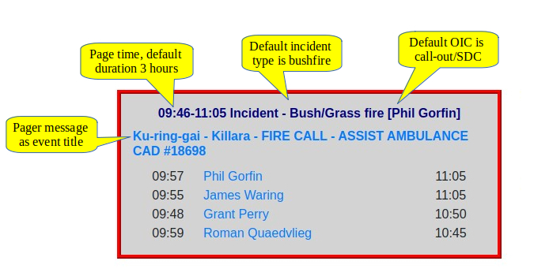

Events
Contents
Events¶
Events are a central part of the sign-in system. Think of an event like a page in the old Attendance Book.
When you attend the station, you sign-in to an activity that is occurring at the station, in the same way that you signed into an activity on the old Attendance Book.
An Event on the sign-in system is just like a page in the Attendance book. When you create an Event, you provide the same details as if you were filling in the top of the page in the Attendance book, including:
Date and time of an activity
Name of the OIC running the activity
The type of actvity (Training, Maintenance, Meeting, .. etc.)
A brief description of the activity
A list of members who attended the activity, along with the times they signed in and out
When these details have been supplied, you will have a new event that members can sign-in to.
Anatomy of an Event
An event consists of a heading, containing information previously held in the heading of a page in the Attendance Book, and a list of attendees, including when they signed-in and signed out.

Updating an event on the kiosk
The following actions will update an event on the kiosk:
Signing in or signing out with a tag.
Signing in using the icon on the top right of the event
Signing out using the “Sign-Out” button
Clicking the title (event details) to edit the event
Clicking a member name to edit their attendance details.
A Busy Day on the Kiosk¶
{kind=link}
Event Types and Controls
Events come in the following types:
Open/available
Events become open 1 hour before their start time and remain open until their end time. When they are open, they will accept sign-ins from members either using a tag, or using the sign-in icon.
Closed/completed
Events close when their finish time has passed. They will be shown with a grey background when they are closed, and will not accept sign-in attempts with a tag. The sign-in icon will also be removed.
Future
Events starting more than 1 hour in the future are shown with a dashed border. They will not be available to sign-in with a tag, and no sign-in icon is shown for future events.
Overnight
Normally, events are removed from the kiosk at midnight when the display is updated. However, you can specify that an event runs overnight by giving a finish time in the next day. The kiosk shows all events that start or end on the current day, so such an event will appear on the start day and on the end day. This allows crew to sign out when they return from night shift.
Overlapping
Events can overlap and/or run simultaneously. When they do, members will be asked to choose which event they want to attend when they tag in.
Warning
Set the end time for overnight events
If the OIC doesn’t set the end time of an event so that it end the next day, members won’t be able to sign-out when they return from their shift, as the event won’t be shown on the kiosk.
If there’s any chance you might be out past midnight (like Cinderella), make sure you set the end time past midnight. If you get back early, no problem.
Activity Types
activity types and collourss:
Open/available Events become open 1 hour before their start time and remain open until their end time. When they are open, they will accept sign-ins from members either using a tag, or using the sign-in icon.
Closed/completed Events close when their finish time has passed. They will be shown with a grey background when they are closed, and will not accept sign-in attempts with a tag. The sign-in icon will also be removed.
Future Events starting more than 1 hour in the future are shown with a dashed border. They will not be available to sign-in with a tag, and no sign-in icon is shown for future events.
Overnight Normally, events are removed from the kiosk at midnight when the display is updated. However, you can specify that an event runs overnight by giving a finish time in the next day. The kiosk shows all events that start or end on the current day, so such an event will appear on the start day and on the end day. This allows crew to sign out when they return from night shift.
Pager callout¶
Pager calls
Pager Calls are detected by separate system which automagically creates a new event on the server as soon as a callout is received for your brigade.
The event should be available for members to sign-in to when they arrive at the station.
